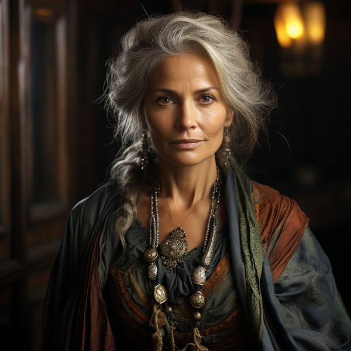

Figure 1: Aravenna Leafwhisper
Aravenna Leafwhisper was born into Hord Gwennath and displayed an early aptitude for learning and observation. As she grew, her insatiable curiosity led her to explore the depths of the Great Forest, gaining a profound knowledge of its flora and fauna.
Her intellectual pursuits eventually drew her to the ancient texts and scrolls of the forest-dwelling tribes, where she delved into subjects ranging from herbalism to the lore of the woods. Aravenna became a self-taught naturalist and a repository of knowledge about the forest and its resources.
As a respected member of Hord Gwennath, she plays a crucial role in providing valuable insights into the forest’s bounty and sharing her expertise in foraging and survival. Aravenna’s calm and thoughtful nature also makes her an ideal mediator in times of conflict within the tribe.
While Aravenna is deeply connected to her tribe and its traditions, she values her independence and often embarks on solo expeditions into the Bellgrald Forest to further her understanding of its mysteries. Her dedication to learning and her unique perspective have earned her the admiration and trust of her fellow tribe members, who rely on her wisdom and knowledge in their nomadic way of life.